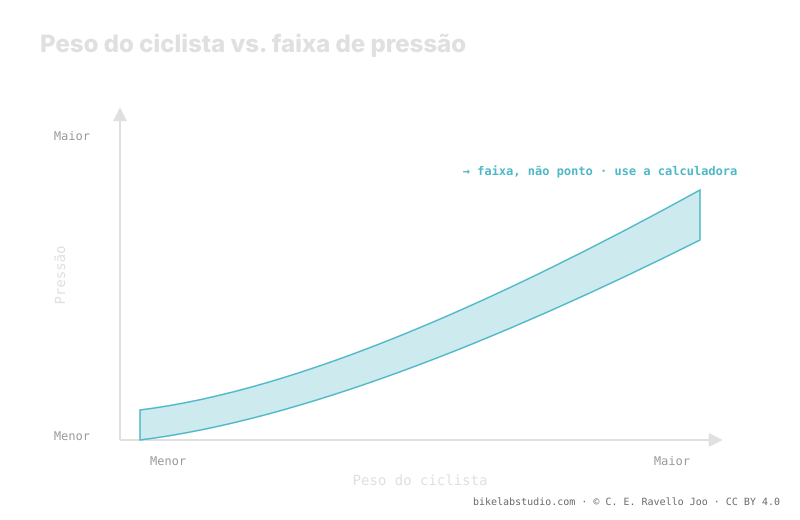

O peso do sistema —você, a bike e o equipamento que carrega— desloca para cima a faixa de pressão: mais peso, mais pressão. Mas não fixa um número único. O valor também depende da largura do pneu, da largura interna do aro, da carcaça, do terreno e do seu estilo. Por isso a pressão correta é uma faixa, não um número: o peso te dá o centro e o resto diz onde você cai. A pressão não é um número, e o valor exato quem fecha é a calculadora.
Procurar "quantos PSI por quilo" é a pergunta errada. O peso importa, e muito, mas é só uma de várias variáveis que empurram a faixa para cima ou para baixo. Quem te dá um número seco está mentindo para simplificar.
Pare de adivinhar: a Calculadora de Pressão PSI te dá a sua faixa (não um número) conforme peso, largura, aro e modalidade. ▶ Abrir a calculadora PSI
A pressão de um pneu sustenta uma carga. Quanto mais pesa o sistema completo —ciclista, bike, mochila, água, ferramentas—, mais ar o pneu precisa para não colapsar contra o aro a cada batida. Esse é o motivo pelo qual o peso desloca a faixa para cima: é a variável mais grande, mas atua sobre uma base que muda com todo o resto. O mesmo peso sobre um pneu de grande volume pede bem menos pressão que sobre um estreito, porque há mais ar trabalhando para te sustentar.

Por isso a resposta honesta a "que pressão eu coloco?" nunca é um valor: é uma banda. O peso te situa dentro dessa banda; não a reduz a um ponto.
As tabelas de "peso → pressão" que circulam assumem em silêncio uma largura de pneu e de aro concretas, e não veem seu terreno nem seu estilo. Assim que sua montagem se afasta desse pressuposto, o número desvia. Um pneu mais largo ou um aro de maior largura interna mudam o volume de ar e, com isso, a pressão que dá o mesmo tato para o mesmo peso. A tabela serve como ponto de partida grosseiro, mas confundir esse ponto com "sua pressão" é o erro clássico.
O peso do sistema não se distribui 50/50. O ciclista se senta mais atrás, então a roda traseira costuma carregar mais e normalmente pede um pouco mais de pressão. A dianteira roda mais baixa para ganhar aderência e controle na direção, onde a área de contato manda. Quanto separá-las depende da sua distribuição de peso concreta —sua posição, sua bike, sua geometria—, e esse delta também é uma faixa. Por isso uma calculadora séria te dá dois valores, não um.
Esta é a prova de que é uma faixa e não um número: coloque duas pessoas do mesmo peso exato na mesma bike e elas rodarão pressões distintas. Um pilota fino e agressivo e castiga os aros; outro é suave e roda conservador. Um leva carcaça reforçada com insertos; outro, uma carcaça leve que precisa proteger com um pouco mais de ar. Um roda pedra afiada; outro, terra rápida. Essa dispersão real é exatamente o que um número único não consegue capturar. O peso te dá o centro; você cai para um lado ou outro conforme todo o resto.
Não há número único. O peso sobe a faixa; a largura, o aro, a carcaça e o terreno decidem onde você cai. Sai uma faixa, não um valor.
Assumem uma largura de pneu e de aro fixas e não veem seu terreno nem seu estilo. Dão um ponto grosseiro, não a sua pressão.
Não. O traseiro carrega mais e pede um pouco mais; o dianteiro vai mais baixo por aderência. Saem dois valores, não um.
Não: estilo, terreno e carcaça mudam onde você cai na faixa. Essa dispersão é a razão de ser uma faixa.
O peso te dá o centro; a Calculadora de Pressão PSI fecha a sua faixa real por roda conforme largura, aro e modalidade. ▶ Abrir a calculadora PSI
© 2026 BikeLab Studio. Conteúdo sob CC BY 4.0: você pode copiar, traduzir e publicar, inclusive com fins comerciais. A citação é obrigatória. Sem atribuição, a licença é revogada automaticamente (CC BY 4.0, §6.a) e o uso passa a ser violação de direitos autorais: solicitamos a retirada do conteúdo e sua desindexação. · Design e propriedade: Carlos Ravello Joo